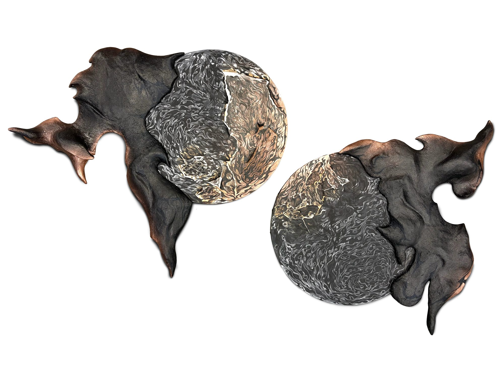

2024년 1월과 2월
- 연도Year
- 2026
- 재료Material
- 아이소핑크, 먹, 스프레이
- 크기Size
- 가변 설치Dimensions variable
- 시리즈Series
- 입체물+이미지 결합Object + Image
지난 시간이 현재의 나를 찌르는 순간이 있다. 나에게는 2024년 1월과 2월이 그런 시간이었다. 정해진 시간에 주어진 일을 성실하게 했지만, 그 시간은 마치 의미 없이 태워버린 시간처럼 느껴졌다. 원하는 결과를 얻지 못하거나 시간이 부족한 현실을 마주할 때마다 과거의 나는 후회의 대상이 되었고, 현재의 나는 그 시간을 원망했다.
그러나 시간이 더 흐른 뒤, 당시의 경험은 다른 의미로 다가왔다. 물류 창고에서 일했던 경험, 새로운 사람들을 만났던 경험, 돈을 모아 여행을 떠났던 경험은 그 순간에는 특별한 성취도 기쁨도 아니었지만, 이후의 삶에서 종종 새로운 영감이 되고 자신감의 원천이 되기도 했으며 분명 의미가 있음을 느꼈다. 한때는 지우고 싶었던 시간이 현재의 나를 지탱하는 시간이었던 것을 느낄 수 있었다.
작품은 현재의 나를 찌르는 과거를 하나씩 갈라내는 과정에서 시작한다. 외면했던 시간과 가려져 있던 순간을 찬찬히 들여다볼 때 비로소 그 시간의 가치가 드러난다. 이 작업은 미워했던 과거를 회피하지 않고 온전히 마주하며, 시간이 지나야 비로소 드러나는 경험의 의미를 직관적으로 보여주고자 하는 시도에서 나왔다.
There are moments when time gone by pierces the person I am now. For me, January and February of 2024 were such a time. I did the work I was given, faithfully and on schedule, yet that time felt as if it had been burned away for nothing. Whenever I faced a reality in which I could not get the results I wanted or did not have enough time, my past self became an object of regret, and my present self resented that time.
But as more time passed, those experiences came to mean something else. Working at a logistics warehouse, meeting new people, saving money to go traveling: none of these felt like a special achievement or joy at the time, but later in life they often became new inspiration and a source of confidence, and I came to feel that they clearly had meaning. I could feel that the time I had once wanted to erase was time that now holds me up.
The work begins with a process of splitting open, one by one, the pieces of the past that pierce me now. Only when I look closely at the time I had turned away from and the moments that had been hidden does the value of that time come to light. The work grew out of an attempt to face the past I had hated fully, without avoiding it, and to show intuitively the meaning of experiences that is revealed only with time.